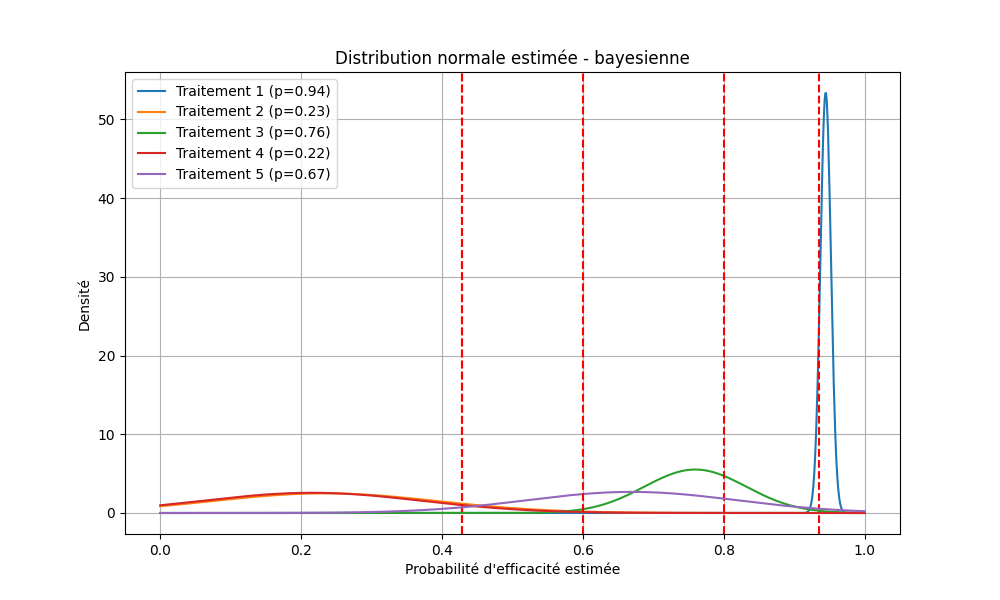
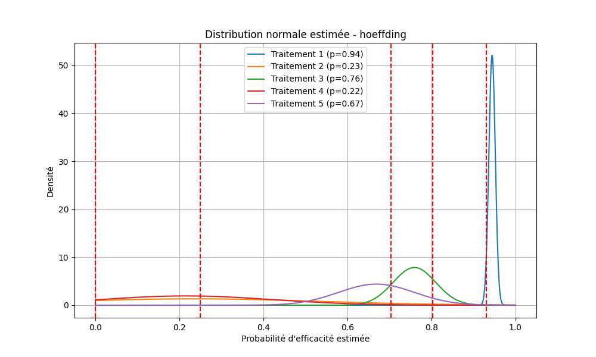
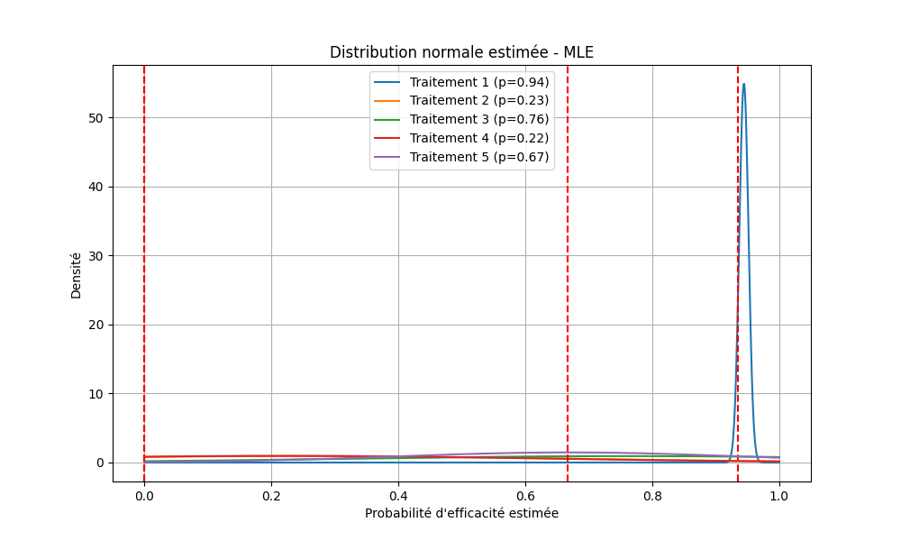
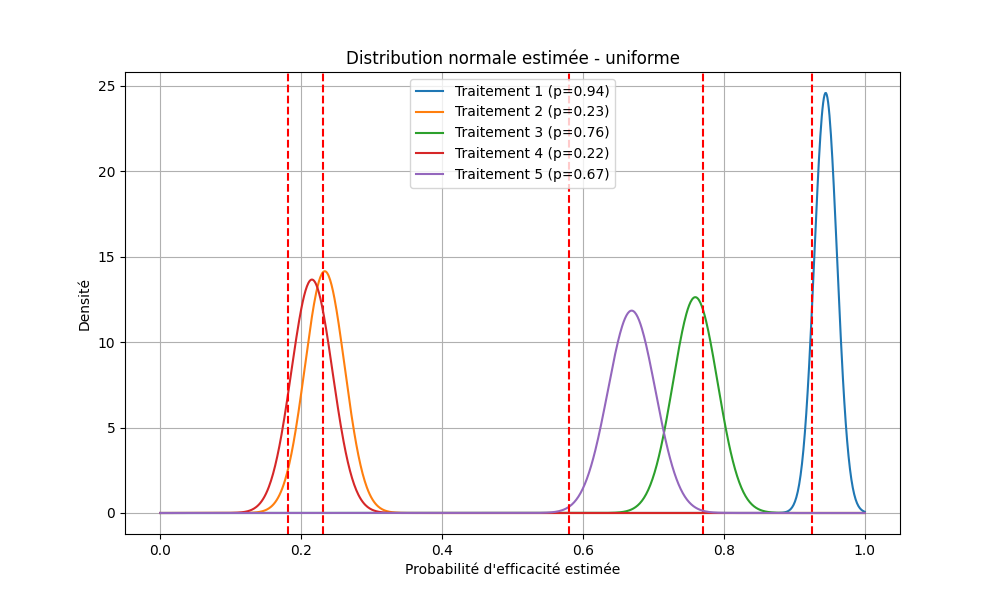
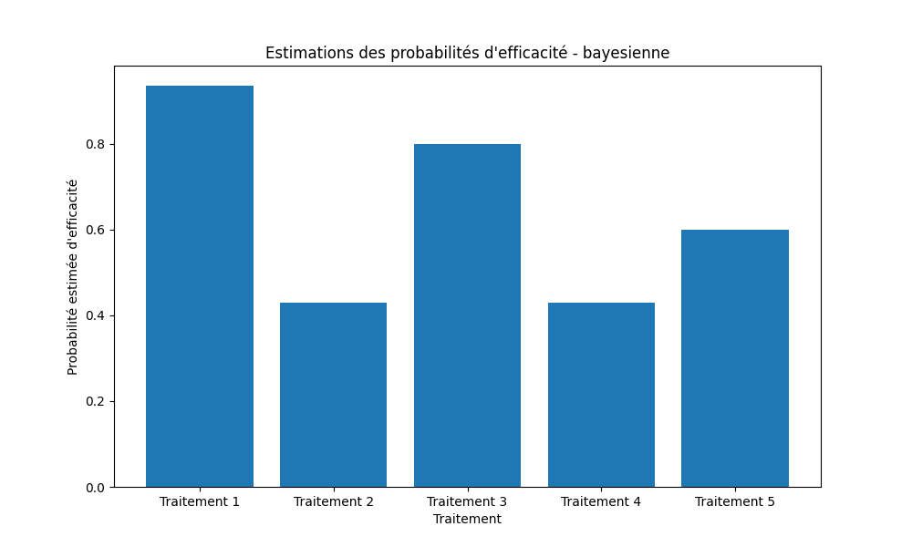
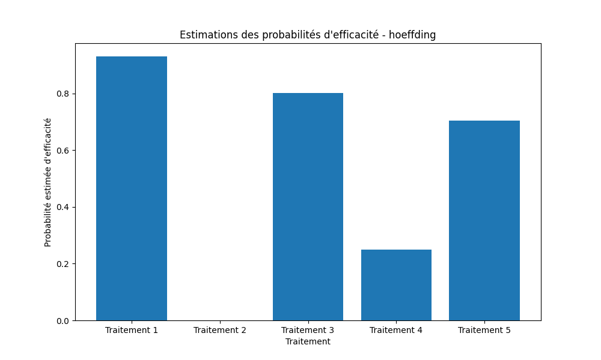
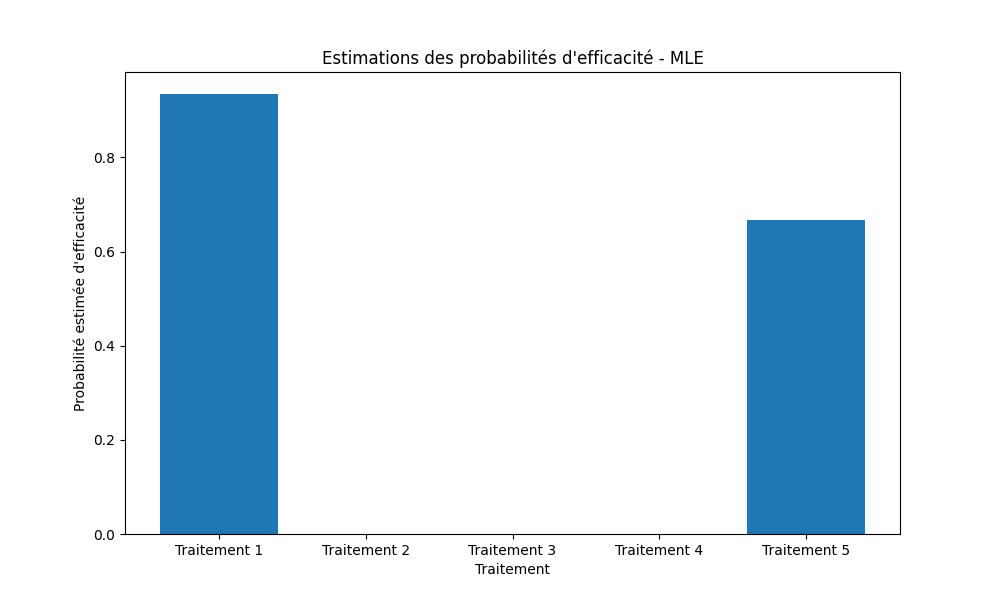
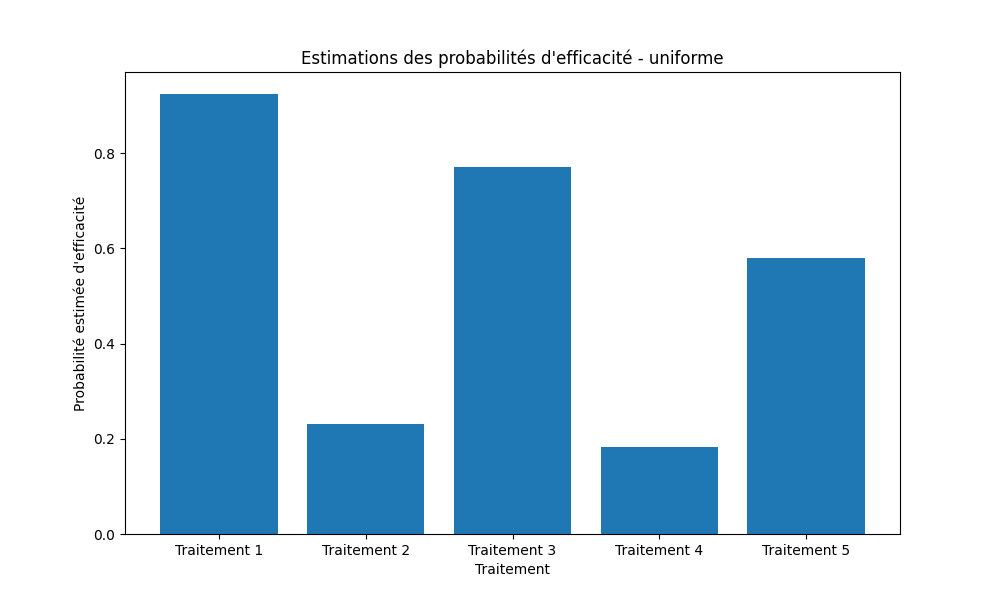

Étude Mathématique et Développement Informatique des Algorithmes de Recommandation
Présentation du Projet
Ce projet a combiné une approche mathématique approfondie avec une réalisation informatique avancée en Python. L'objectif était de simuler un essai clinique utilisant différentes stratégies d'algorithmes de recommandation pour comparer leur efficacité sur un grand nombre de patients.
Implémentation Informatique
Le cœur de ce projet repose sur le développement Python :
- Construction modulaire du code permettant la flexibilité des simulations.
- Utilisation de bibliothèques scientifiques (
numpy,matplotlib,scipy) pour la modélisation statistique et les calculs mathématiques. - Visualisation des résultats via des graphiques pour interpréter les performances de chaque stratégie.
- Mise en œuvre de méthodes robustes :
- Estimation bayésienne (Thompson Sampling).
- Approche MLE (Maximum de vraisemblance).
- Gestion des marges d'erreur avec l'inégalité de Hoeffding.
- Comparaison avec la stratégie uniforme de référence.
Chaque stratégie a été codée et testée dans un environnement de simulation automatisée, avec analyse comparative des performances.
Visualisations des Résultats
Distributions des probabilités estimées
Bayésienne
Hoeffding
MLE
Uniforme
Estimations des probabilités d'efficacité
Bayésienne
Hoeffding
MLE
Uniforme
Analyse & Conclusion
Les simulations informatiques ont permis de tirer des enseignements clés :
- Uniforme : simple mais peu performant, servant de référence minimale.
- MLE : efficace à long terme mais vulnérable en début d'essai.
- Hoeffding : ajoute de la robustesse grâce aux marges d’erreur, idéal pour des essais sécurisés.
- Thompson Sampling (Bayésien) : méthode la plus équilibrée, optimisant à la fois exploration et exploitation grâce à une approche probabiliste dynamique.
Cette étude montre l'importance de l'intégration de la science des données et de la programmation pour traiter des problématiques complexes comme les essais cliniques, en automatisant l'analyse et en fournissant des visualisations pertinentes.
Code Source
Retrouvez l'intégralité du code source de ce projet sur GitHub :
Accéder au dépôt GitHub